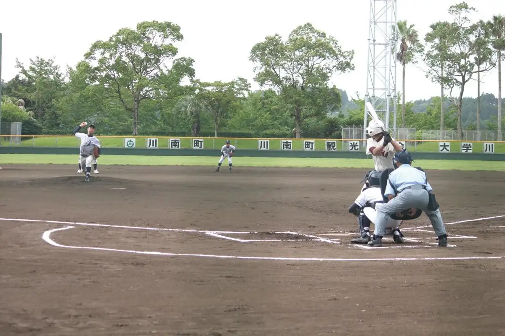
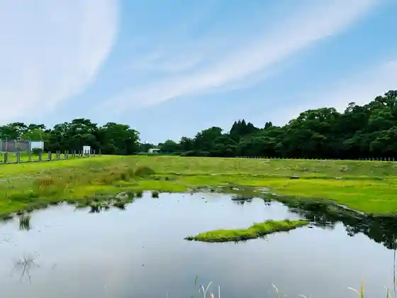
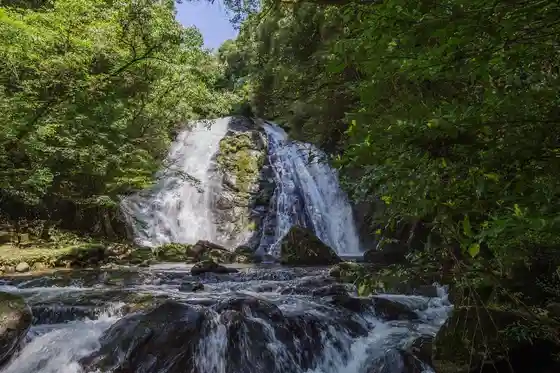
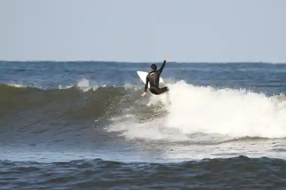
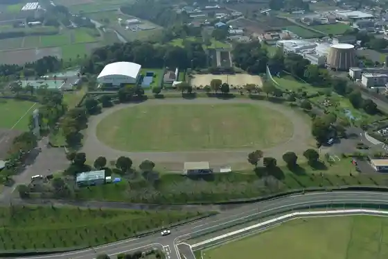

Japan / Miyazaki / Kawaminami
Kawaminami, Miyazaki
Kawaminami · Miyazaki
Kawaminami
Highlighted on the Miyazaki map.

Sights
Kawaminami Sports Park (Yakyujo)
Kawaminami, Miyazaki · 0983-27-8020 · Official / source link
Kawaminami Marsh Shokubutsu Gunraku
Kawaminami, Miyazaki · 0983-27-8020 · Official / source link

Shinohara Fufu Taki
Kawaminami, Miyazaki · 0983-27-8011 · Official / source link

Ikura Hama
Kawaminami, Miyazaki · 0983-27-8011 · Official / source link

Kawaminami Sports Park (Rikujokyogijo)
Kawaminami, Miyazaki · 0983-27-8020 · Official / source link

Kawaminami Sports Park (Tenisu Ba)
Kawaminami, Miyazaki · 0983-27-8020 · Official / source link
Tenryu Ume
Kawaminami, Miyazaki · 0983-27-8011 · Official / source link
Takamori Kinrin Park
Kawaminami, Miyazaki · 0983-27-8020 · Official / source link
Yanezuke Tamokuteki Undojo (Kawaminami Sports Park)
Kawaminami, Miyazaki · 0983-27-8020 · Official / source link
Shiawase no Kiiroi Posuto (Kawaminami)
Kawaminami, Miyazaki · 0983-32-0239 · Official / source link